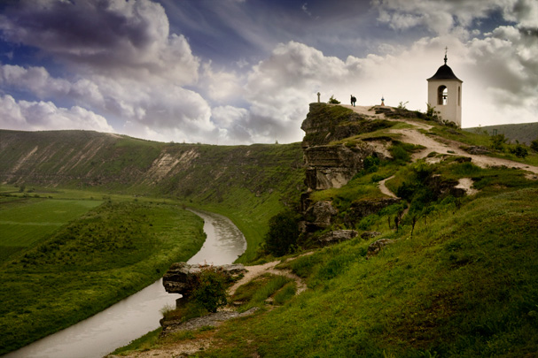
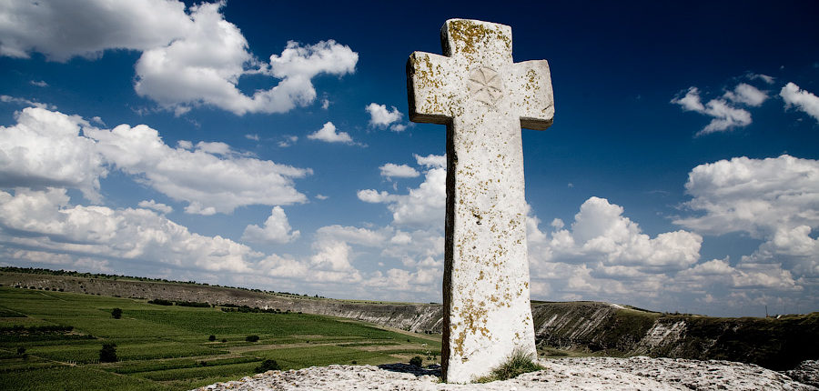

ORHEIUL VECHI
Complexul muzeal Orheiul Vechi este amplasat în valea Răutului, un afluent de dreapta al Nistrului,
pe teritoriul comunei Trebujeni din raionul Orhei al Republicii Moldova.
Rezervația cultural-naturală Orheiul Vechi care are un statut special și constituie cel mai important
sit cultural din Republica Moldova, aflându-se și în procesul de nominalizare pentru a fi înscris în
Lista Patrimoniului Mondial al UNESCO. Complexul cuprinde cîteva zeci de hectare ale orașului medieval
Orhei (sec. XIII–XVI), denumit ulterior Orheiul Vechi.

Complexul Orheiul Vechi constituie un sistem alcătuit din elemente culturale și naturale: landșaft natural arhaic, biodiversitate, cadru arheologic de excepție,
varietate istorico-arhitecturală, habitat rural tradițional și originalitate etnografică.

În zonă sunt cunoscute în jur de 350 de complexe rupestre, în jur de 100 fiind încăperi săpate de oameni pentru a crea lăcașuri călugărești, iar 250 grote carstice formate de procese naturale, dar folosite de oameni pentru apărare sau adăpost. Unele dintre peșterile săpate în stânci au chiar și 2000 de ani vechime.
Locul atrage multă lume, de la cei care caută experiențe mai eterice – se crede că există un centru energetic deosebit la alpiniști, care vin în număr mare, aici având loc și anumite întruniri.
Se pot face multe drumeții, vara au loc diferite festivaluri.

Se pot vizita satele Trebujeni și Butuceni, mănastiri rupestre, galerii, sau peşteri săpate în stîncile calcaroase, o cruce de piatra din sec XVIII, un muzeu într-o asă țărănească, Biserica Sfânta
Maria, ruinele băilor orientale, fortificații medievale și chiar ruinele unei cetăți dacice.